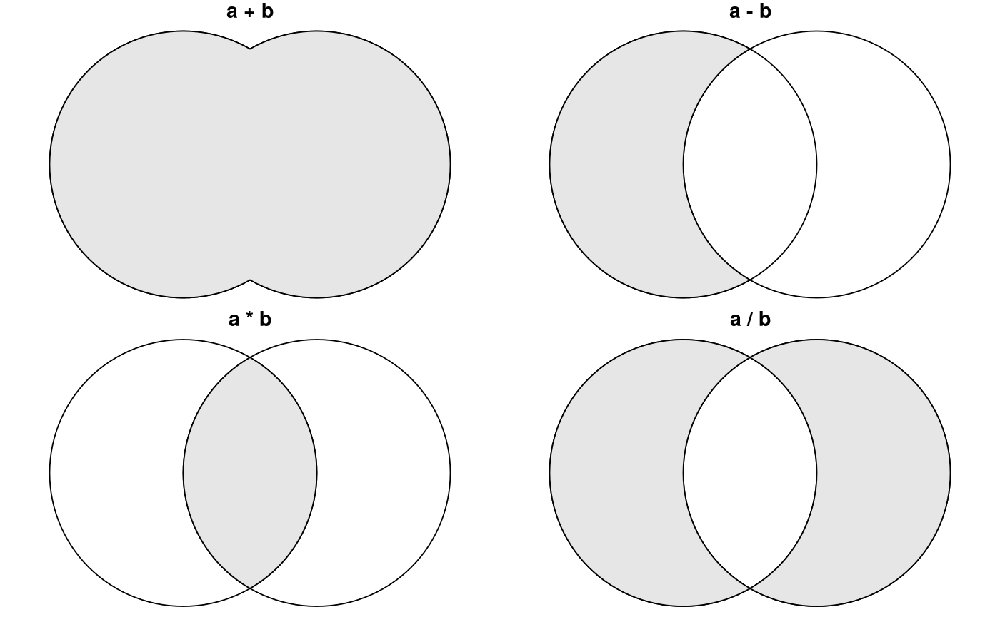

S3 Ops Group Generic Functions (multiply and add/subtract) for affine transformation
Ops functions for simple feature geometry objects (constrained to multiplication and addition)
# S3 method for sfg Ops(e1, e2) # S3 method for sfc Ops(e1, e2)
Arguments
| e1 | object of class |
|---|---|
| e2 | numeric of object of class |
Value
object of class sfg
Examples
#>#>#># world in 0-360 range: library(maps) w = st_as_sf(map('world', plot = FALSE, fill = TRUE)) w2 = (st_geometry(w) + c(360,90)) %% c(360) - c(0,90) plot(w2, axes = TRUE)#>#>opar = par(mfrow = c(2,2), mar = c(0, 0, 1, 0)) a = st_buffer(st_point(c(0,0)), 2) b = a + c(2, 0) p = function(m) { plot(c(a,b)); plot(eval(parse(text=m)), col=grey(.9), add = TRUE); title(m) } lapply(c('a + b', 'a - b', 'a * b', 'a / b'), p)#> [[1]] #> NULL #> #> [[2]] #> NULL #> #> [[3]] #> NULL #> #> [[4]] #> NULL #>par(opar) nc = st_transform(st_read(system.file("gpkg/nc.gpkg", package="sf")), 32119) # nc state plane, m#> Reading layer `nc.gpkg' from data source `/home/edzer/git/sf/inst/gpkg/nc.gpkg' using driver `GPKG' #> Simple feature collection with 100 features and 14 fields #> geometry type: MULTIPOLYGON #> dimension: XY #> bbox: xmin: -84.32385 ymin: 33.88199 xmax: -75.45698 ymax: 36.58965 #> epsg (SRID): 4267 #> proj4string: +proj=longlat +datum=NAD27 +no_defsb = st_buffer(st_centroid(st_union(nc)), units::set_units(50, km)) # shoot a hole in nc: plot(st_geometry(nc) - b, col = grey(.9))